BME | EEG Analysis - Preprocessing
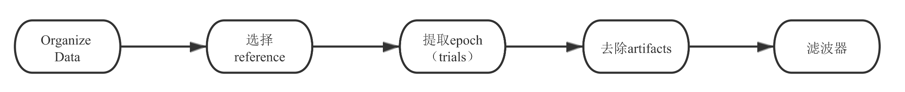
Organize Data
Cleanse the imported data into the required structure. Select data types (such as cell types in MATLAB, multidimensional matrix types, structure types, etc., in Python including tuples, lists, dictionaries, np.array, MNE data structures, etc.)
Understand the fundamental aspects of the dataset: the number of channels, patients, the stored content in each dataset, the size of the dataset, etc.
Re-reference
Data obtained from online sources or EEG machines are typically reference-free, requiring re-referencing. However, hardware-level referencing might have been performed by the EEG machine during output.
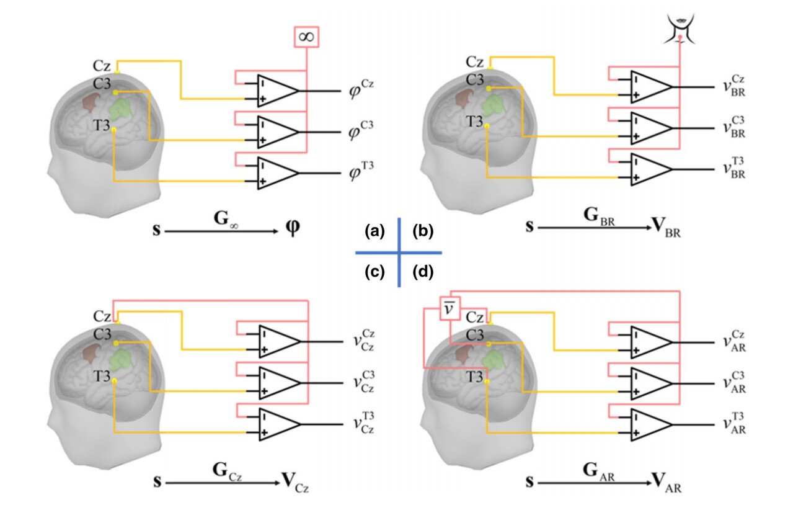
The term EEG Montage commonly referred to in papers refers to how EEG electrical signals are re-referenced. Common referencing methods include:
- Unipolar Reference: Each electrode is measured concerning a reference electrode. This Montage is often used to study the activity of specific electrodes or event-related potentials (ERPs). Common reference electrode positions include mastoid bilaterally (bottom left of the figure below), Cz (bottom right of the figure below), Infinity/Zero Reference (no reference), neck, etc.
- Bipolar Reference: Difference between adjacent electrodes. This Montage can be used to study local potential differences, such as observing synchrony between brain areas. The first row in the figure below shows common bipolar montage maps.
1
EEG_ref = -diff(EEG)
1
EEG_ref = -np.diff(EEG, axis=0)
- Average Reference: The average signal of all electrodes serves as a reference. This Montage is used to study overall brain electrical activity but may be influenced by the number and positions of electrodes. Particularly useful when the number of electrodes exceeds 100.
1
EEG_ref = EEG-repmat(mean(EEG,1),size(EEG,1),1)
1
EG_ref = EEG - np.tile(np.mean(EEG, axis=0), (EEG.shape[0], 1))
- Region-of-Interest Montage: Connecting specific brain area electrodes to focus on the activity of particular brain regions.
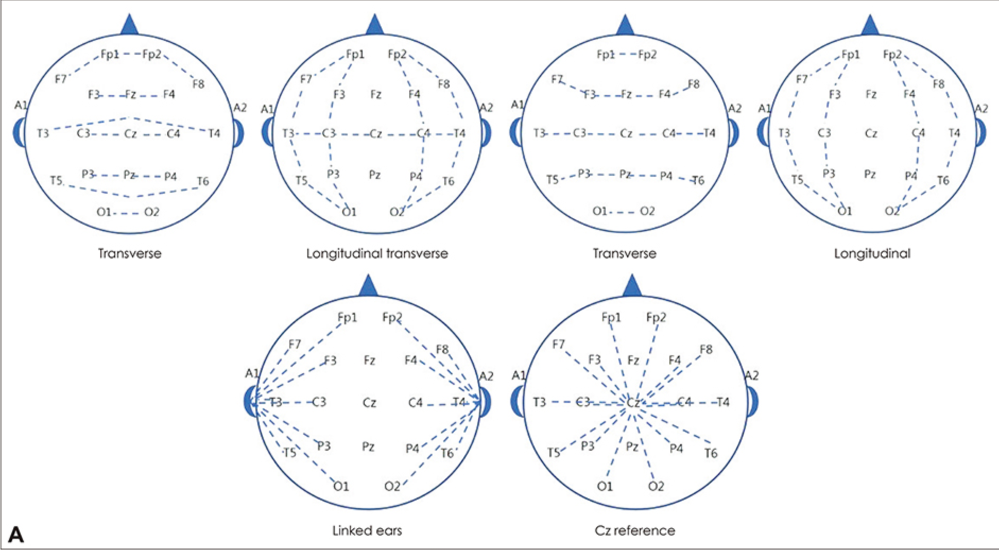
Note:
- MEG is reference-free.
- Surface Laplacian is reference-independent.
Epoch Extraction
Select Length: Dividing long EEG data into segments. Considerations include where to segment, how long, etc. Key points to consider:
- Where to choose t=0? For example, at the beginning of stimulation, when an event occurs, or at the time of interest (e.g., button press, etc.).
- How much time to keep before t=0?
- How much time to keep after t=0?
Consider overlaps between different epochs as the epoch length increases.
Retain Buffer: If time-frequency analysis or filters are applied to epochs, a boundary margin buffer needs to be maintained. For example, 3 times the length corresponding to the lowest frequency of interest. For 2Hz activity, reserve 1500ms. Leaving a buffer is crucial due to the “edge effect” when using time-domain filters. Intuitive manifestations include data distortion at the beginning and end of epochs.
Select Quantity: Strive to ensure an equal number of trials under different conditions. Otherwise, differences might arise during power or phase calculations. If trial numbers vary, randomly select N trials or take N trials under similar conditions.
Remove Artifacts
By broadly examining the available data, determine how to remove artifacts. Common methods include using filters or ICA. Partial data deletion might also be considered (entire epoch or affected parts, all channels or only affected channels).
MNE provides artifact detection code: Preprocessing Overview
Tutorial: ERP Artifacts
Eye Blinking
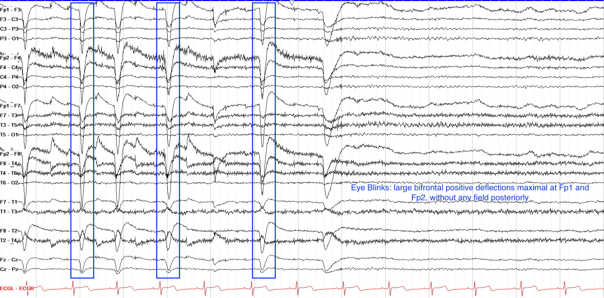
Eye Movement (Oculomotor)
.")
Electrical Artifact
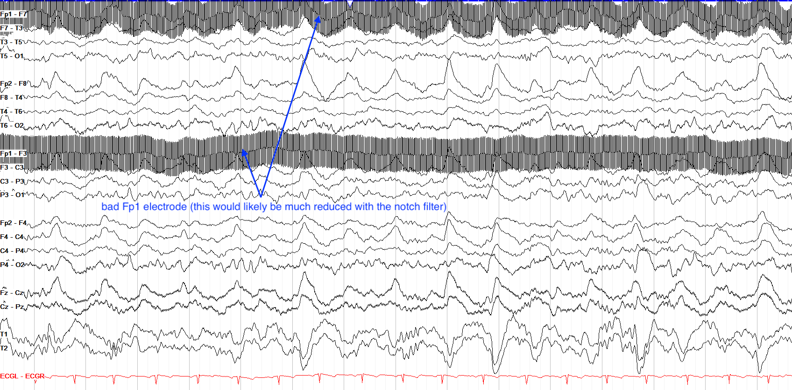
Electrode Movement
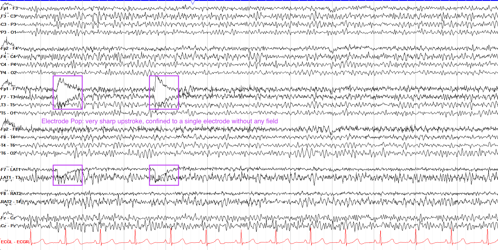
Myogenic Artifact
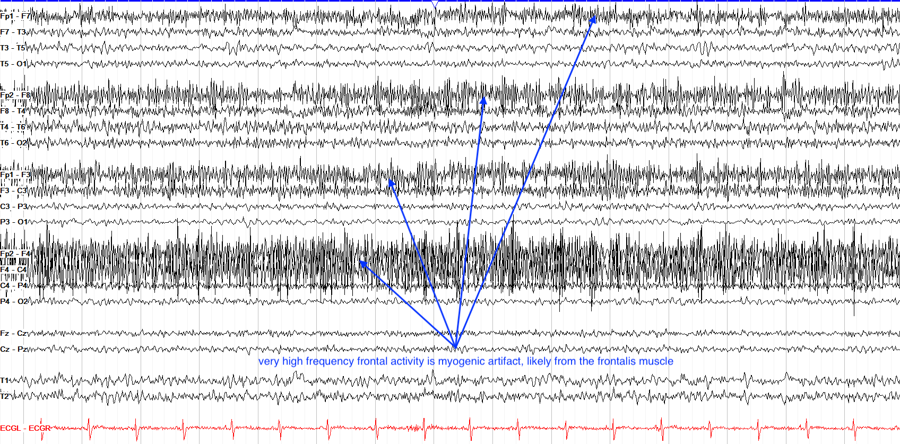
Sweat Artifact
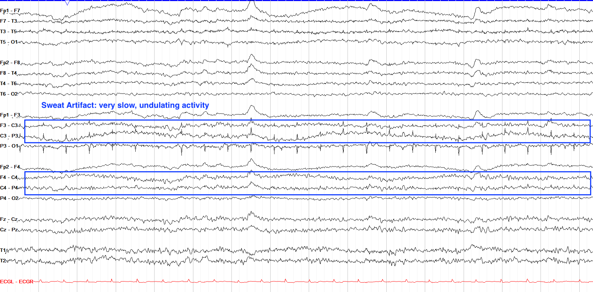
Chewing or Jaw Movement Artifacts

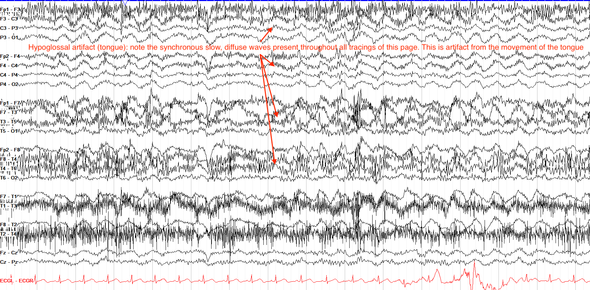
Cardiac Artifact
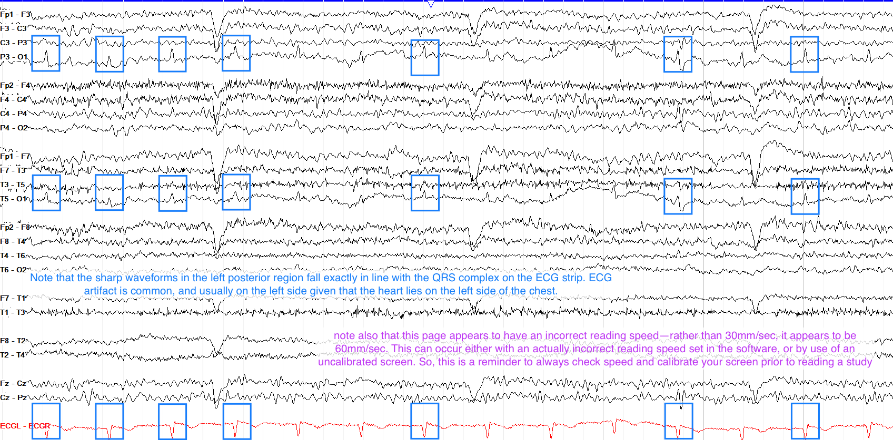
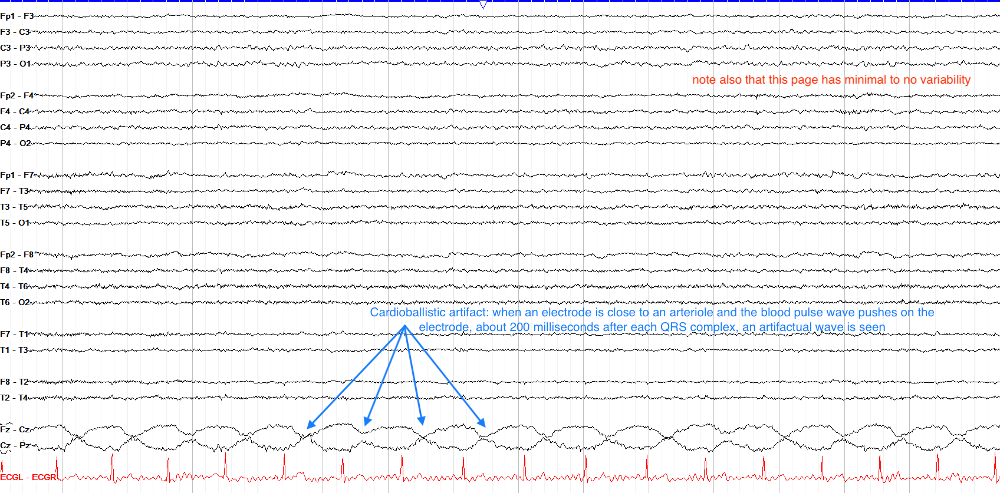
Chest Movement
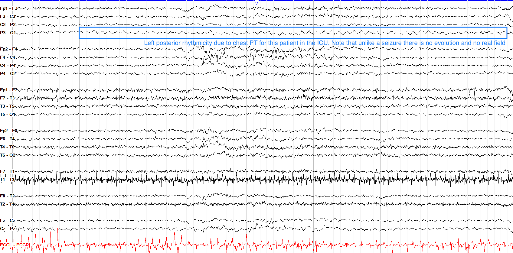
Hand Movement
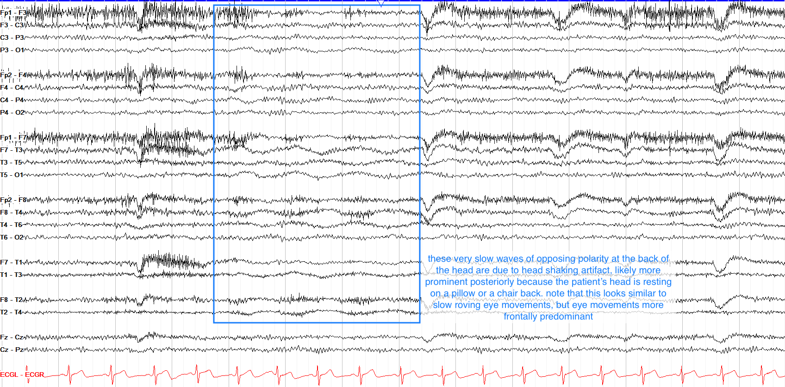
Disclaimer: This blog content serves as class notes, shared for educational purposes. Some images and content are sourced from textbooks, lecture materials, and the internet. If there are any copyright concerns, please contact aursus.blog@gmail.com for removal.